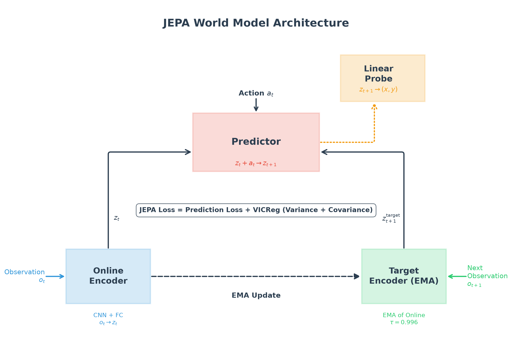
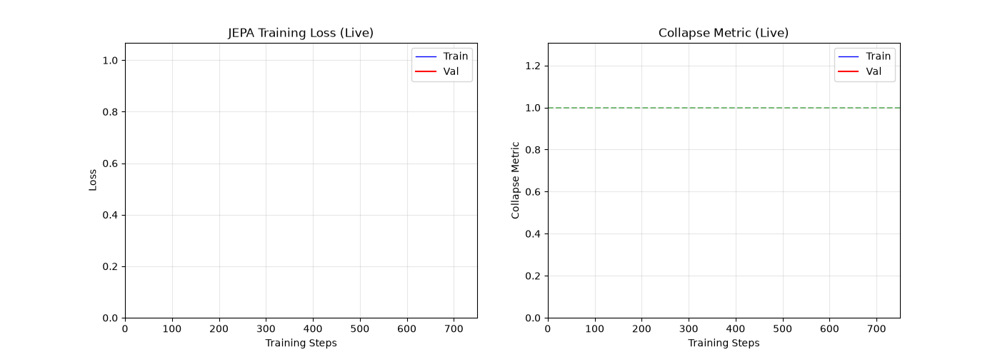
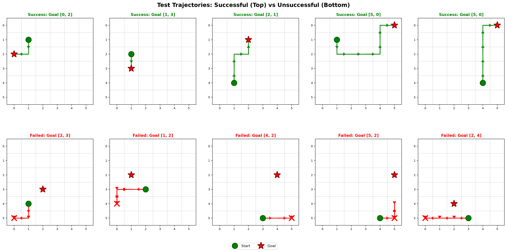

What is JEPA?
JEPA (Joint Embedding Predictive Architecture) is a self-supervised learning architecture introduced by Yann LeCun that follows a fundamentally different philosophy from today's large language models.
The core problem with current LLMs and LLM-based models is that they cannot truly predict the consequences of their actions. They operate on token sequences, learning statistical correlations rather than building an internal model of how the world works. They generate the next token based on patterns, but they don't understand cause and effect — what happens if I take this action in this state?
JEPA was designed to address this. Instead of predicting raw pixels, text, or video frames directly, JEPA learns to predict in a latent space — an abstract representation that captures only the information relevant for decision-making. By operating in this compressed latent dimension, JEPA minimizes computation costs while maintaining the ability to reason about future states. It's the difference between memorizing every frame of a video and understanding the physics that govern how objects move.
In this implementation, we apply JEPA to a simple 2D grid world. An agent navigates a 6×6 room, and the model learns the latent dynamics from random exploration. The trained world model is then used for model-predictive control (MPC) — planning in latent space to reach goals.
Architecture
The JEPA architecture follows a U-shaped design with four main components:
- Online Encoder — A CNN + FC network that encodes 6×6 grid observations into 16-dimensional latents
zₜ. - Target Encoder (EMA) — An exponential moving average copy of the online encoder (τ=0.996) that encodes the next observation
oₜ₊₁intozₜ₊₁target. - Predictor — Takes the current latent
zₜand an action embeddingaₜ, predicts the next latentzₜ₊₁. - Linear Probe — Trained on the predictor's output to decode position
(x, y)fromzₜ₊₁, verifying that predicted latents encode meaningful state.

Loss Function: JEPA + VICReg
The training objective combines prediction loss with VICReg regularization to prevent representation collapse:
L = ||zₜ₊₁pred − zₜ₊₁target||²
+ λ_var · VarianceLoss
+ λ_cov · CovarianceLoss- Prediction Loss — MSE between predicted and target latents.
- Variance Loss —
ReLU(γ − std(z))with γ=1.0. Pushes standard deviation of each latent dimension toward 1, preventing collapse to a point. - Covariance Loss — Penalizes off-diagonal covariance terms, decorrelating latent dimensions.
- Weights — λvar=1.0, λcov=0.04.
Training
The model is trained on 512 random transitions collected in a 6×6 grid (4 actions: up, down, left, right). Data is split 70% train / 15% validation / 15% test. Optimization uses Adam (lr=3×10⁻⁴, batch=32). The target encoder is updated via EMA (τ=0.996) each step. Early stopping triggers after 10 validation evaluations without improvement (evaluated every 50 steps).

Evaluation
Linear Probe
A linear probe trained on the predictor's single-step predictions zₜ₊₁pred achieves R² = 0.76 on held-out test data, recovering the agent's (x, y) position from predicted latents. This confirms the model learns a meaningful state representation rather than trivial shortcuts.
Multi-step Prediction
Latent rollouts over 5 steps achieve MSE ≈ 11.2 against the target encoder, demonstrating the learned dynamics are consistent over short horizons.
MPC Planning
Using random-shooting MPC (64 sequences, horizon=5) in latent space, the planner reaches goals in 70% of episodes (vs. 10% random baseline), with a mean of 8.3 steps to goal. The model uses the learned latent dynamics to simulate action sequences and pick the one minimizing distance to the encoded goal.

Implementation Details
All components are implemented from scratch using PyTorch primitives — no high-level libraries like nn.Sequential or pre-built modules. The codebase is organized into:
data_env.py— Environment, dataset generation with chunked collection (OOM-safe), train/val/test splitmodel.py—Encoder,TargetEncoder,Predictor,LinearProbeclasses + loss functionstraining_eval.py—JEPATrainerwith validation logging, early stopping, checkpointingmain.py— Orchestration entry pointvisualize.py— Architecture diagram, animated training curves, trajectory grid
Key Hyperparameters
| Parameter | Value | Description |
|---|---|---|
| Room size | 6×6 | Grid dimension |
| Latent dim | 16 | Embedding size |
| Train samples | 512 | Random transitions |
| Learning rate | 3×10⁻⁴ | Adam optimizer |
| EMA τ | 0.996 | Target encoder decay |
| Max steps | 1500 | Early stopped at ~750 |
| MPC sequences | 64 | Random shooting |
| MPC horizon | 5 | Planning steps |
Results Summary
- Probe R²: 0.76 — predicted latents encode position well
- 5-step latent MSE: 11.2 — dynamics are consistent
- MPC success rate: 70% (vs. 10% random)
- Mean steps to goal: 8.3
- Collapse metric: 0.03 → 1.03 — successful VICReg regularization
The model demonstrates that a self-supervised world model can learn useful latent dynamics from random exploration and use them for goal-directed planning without any reward signals or expert demonstrations.
Run It Yourself
# Train the model
python -m jepa.main
# Generate visualizations
python -m jepa.visualize
Outputs are saved to jepa/data/ (checkpoints, history, predictions) and docs/images/JEPA/ (architecture.png, training_animation.gif, trajectory_grid.png).